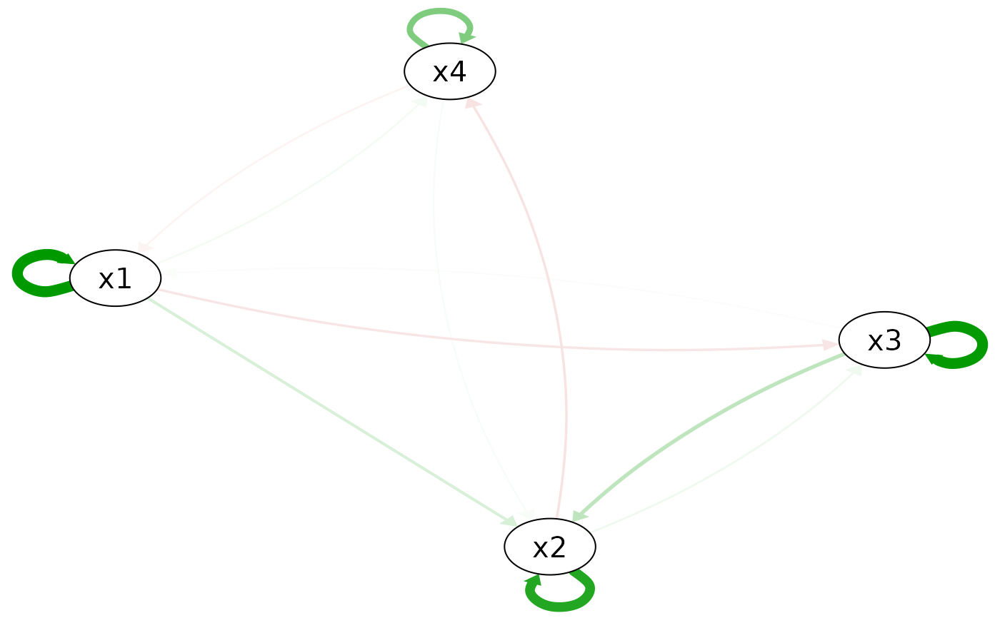
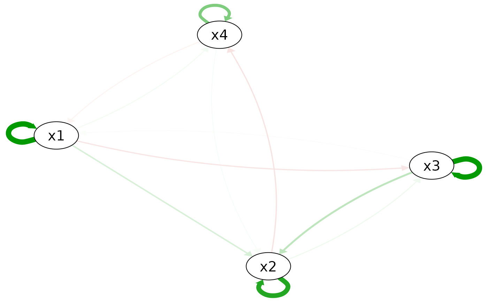

This function estimate regularized nonlinear quadratic vector autoregression models with strong hierarchy using the RAMP::RAMP() algorithm, and also compare it with the linear AR, regularized VAR, and unregularized (full) VAR and quadratic VAR models.
Usage
quadVAR(
data,
vars,
dayvar = NULL,
beepvar = NULL,
penalty = "LASSO",
tune = "EBIC",
donotestimate = NULL,
SIS_options = list(),
RAMP_options = list()
)
# S3 method for class 'quadVAR'
print(x, ...)
# S3 method for class 'quadVAR'
summary(object, ...)
# S3 method for class 'quadVAR'
coef(object, ...)
# S3 method for class 'coef_quadVAR'
print(
x,
use_actual_names = TRUE,
abbr = FALSE,
minlength = 3,
omit_zero = TRUE,
digits = 2,
row.names = FALSE,
...
)
# S3 method for class 'quadVAR'
plot(x, value = NULL, value_standardized = TRUE, interactive = FALSE, ...)Arguments
- data
A
tibble, data.frame, or matrix that represents a time series of vectors, with each row as a time step.- vars
A character vector of the variable names used in the model.
- dayvar
String indicating assessment day. Adding this argument makes sure that the first measurement of a day is not regressed on the last measurement of the previous day. IMPORTANT: only add this if the data has multiple observations per day.
- beepvar
Optional string indicating assessment beep per day. Adding this argument will cause non-consecutive beeps to be treated as missing!
- penalty
The penalty used for the linear and regularized VAR models. Possible options include "LASSO", "SCAD", "MCP", with "LASSO" as the default.
- tune
Tuning parameter selection method. Possible options include "AIC", "BIC", "EBIC", with "EBIC" as the default.
- donotestimate
A character vector of the model names that are not estimated. Possible options include, "NULL_model", "AR", "VAR", "VAR_full", "quadVAR_full", "all_others", with NULL as the default. If set "all_others", then only a
quadVARmodel will be estimated. For datasets with large number of variables, you may set this parameter to "quadVAR_full" to save time.- SIS_options
A list of other parameters for the
SIS::tune.fit()function. This is used for the regularized VAR models.- RAMP_options
A list of other parameters for the
RAMP::RAMP()function. This is used for the nonlinear quadratic VAR model.- ...
For
print.quadVAR, additional arguments passed toprint.coef_quadVAR(). Forprint.coef_quadVAR, additional arguments passed toprint.data.frame().- object, x
An
quadVARobject. (Forprint.coef_quadVAR, ancoef_quadVARobject returned bycoef.quadVAR().)- use_actual_names
Logical. If
TRUE, the actual variable names are used in the output. IfFALSE, the names "X1", "X2", etc., are used in the output. Default isTRUE.- abbr
Logical. If
TRUE, the output is abbreviated. Default isFALSE.- minlength
the minimum length of the abbreviations.
- omit_zero
Logical. If
TRUE, the coefficients that are zero are omitted. Default isFALSE.- digits
the minimum number of significant digits to be used: see
print.default.- row.names
logical (or character vector), indicating whether (or what) row names should be printed.
- value
A numeric vector of length 1 or the same as the number of nodes, that specifies the values of the variables that the linearized model will be based on. If the length is 1, the same value will be used for all variables. The default value is
NULL, in which case the value will be set to 0 in calculation, which means (ifvalue_standardized = TRUE) the linearized model will be based on the mean values of all variables.- value_standardized
A logical value that specifies whether the input value is standardized or not. If TRUE, the input value will be regarded as standardized value, i.e., mean +
value* sd (e.g., 0 is the mean, 1 is mean + sd, ...). If FALSE, the input value will regarded as in the raw scale of the input data. If the raw dataset was already standardized, this parameter does not have an effect. The default value isTRUE.- interactive
Whether to produce an interactive plot using
shiny(in which the user can change the values of variables interactively) or a static plot usingqgraph::qgraph(). Default isFALSE.
Value
An quadVAR object that contains the following elements:
NULL_model: A list of NULL models for each variable.AR_model: A list of linear AR models for each variable.VAR_model: A list of regularized VAR models for each variable.VAR_full_model: A list of unregularized (full) VAR models for each variable.quadVAR_model: A list of regularized nonlinear quadratic VAR models for each variable.quadVAR_full_model: A list of unregularized (full) nonlinear quadratic VAR models for each variable.data,vars,penalty,tune,SIS_options,RAMP_options: The input arguments.data_x,data_y: The data directly used for modeling.
Methods (by generic)
print(quadVAR): Print the coefficients for a quadVAR object. Seecoef.quadVAR()andprint.coef_quadVAR()for details.summary(quadVAR): Summary of a quadVAR object. Different IC definitions used by different packages (which differ by a constant) are unified to make them comparable to each other.coef(quadVAR): Extract the coefficients from a quadVAR object.plot(quadVAR): Produce a plot for the linearized quadVAR model. Equivalent to first produce a linear quadVAR network usinglinear_quadVAR_network(), then useplot.linear_quadVAR_network().
Examples
set.seed(1614)
data <- sim_4_emo(time = 200, sd = 1)
plot(data[, "x1"])
qV1 <- quadVAR(data, vars = c("x1", "x2", "x3", "x4"))
summary(qV1)
#> # A tibble: 6 × 5
#> Model Sumdf SumIC DiffIC Weight
#> <chr> <dbl> <dbl> <dbl> <dbl>
#> 1 NULL_model 0 3580. 1132. 1.96e-246
#> 2 AR 4 2775. 326. 1.83e- 71
#> 3 VAR 16 2544. 95.4 1.95e- 21
#> 4 VAR_full 16 2544. 95.4 1.95e- 21
#> 5 quadVAR 28 2449. 0 1.00e+ 0
#> 6 quadVAR_full 56 2519. 70.1 5.95e- 16
coef(qV1)
#> model effect estimate
#> x1 x1 1.6273
#> x1 x3 0.0329
#> x1 x4 -0.0751
#> x1 x1:x1 -0.1019
#> x1 x1:x3 -0.1177
#> x1 x1:x4 -0.1065
#> x1 x3:x3 -0.0104
#> x1 x4:x4 0.0157
#> x2 x1 0.2520
#> x2 x2 1.4055
#> x2 x3 0.4096
#> x2 x4 0.0446
#> x2 x1:x3 -0.0760
#> x2 x2:x2 -0.0863
#> x2 x2:x3 -0.0822
#> x2 x2:x4 -0.1158
#> x2 x3:x3 -0.0565
#> x3 x1 -0.1685
#> x3 x2 0.1035
#> x3 x3 1.6050
#> x3 x1:x3 -0.0769
#> x3 x2:x2 0.0018
#> x3 x2:x3 -0.1377
#> x3 x3:x3 -0.1004
#> x4 x1 0.0675
#> x4 x2 -0.1798
#> x4 x4 0.8196
#> x4 x1:x4 -0.1138
plot(qV1)
#> ℹ The quadVAR model, being nonlinear, generates a network meaningful only for
#> specific variable values. If values are unspecified, the linearization/the
#> plot defaults to 0 (i.e., the mean values of all variables if
#> `value_standardized = TRUE`), but this is not a complete description of the
#> model estimation and may not be meaningful in all cases.
#> This message is displayed once every 8 hours.
# Compare the estimation with the true model
plot(true_model_4_emo())
 plot(qV1, value = 0, value_standardized = FALSE, layout = plot(true_model_4_emo())$layout)

plot(qV1, value = 0, value_standardized = FALSE, layout = plot(true_model_4_emo())$layout)
